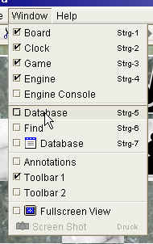

|
|
jose 1.4.1 |
|
You can modify the arrangement of windows and panels to suit your own taste.
Panels can be resized, moved to other locations, or placed in separate window frames.
Select a Panel from the Window menu:

Each Panel has a Context Menu that is activated by the right mouse button. The Context Menu offers (among other things) commands for hiding and moving panels.
Right click in the panel area and choose "Hide" from the menu:

Move the mouse over the separator bar; notice how the mouse cursor turns into a double pointed arrow:

Click and drag the mouse to resize the panel. Most panels will resize dynamically while you move the mouse.
"Undocking" a panel will show it in a separate window frame.
Right click inside the panel and choose "New Window":

"Docking" a panel will restore it to its original location.
Right click inside the pane and choose "Dock"

Moving a panel to another location is slightly more complicated.
First, right click into the panel area and choose "Move panel to another location":

Now move to the mouse around the window. Whenever to mouse comes close to a "docking" location,
a grey frame will appear on the screen. Left click the mouse to move the panel to that location:

Press "Esc" to abort the operation.
Note that you can arrange panels in any window frame. For example, you could place the Board Panel inside the Database window.
Use Reset Layout from Window Menu to restore the original panel layout.
|
|
© 2002-2006 jose-chess.sourceforge.net |
|